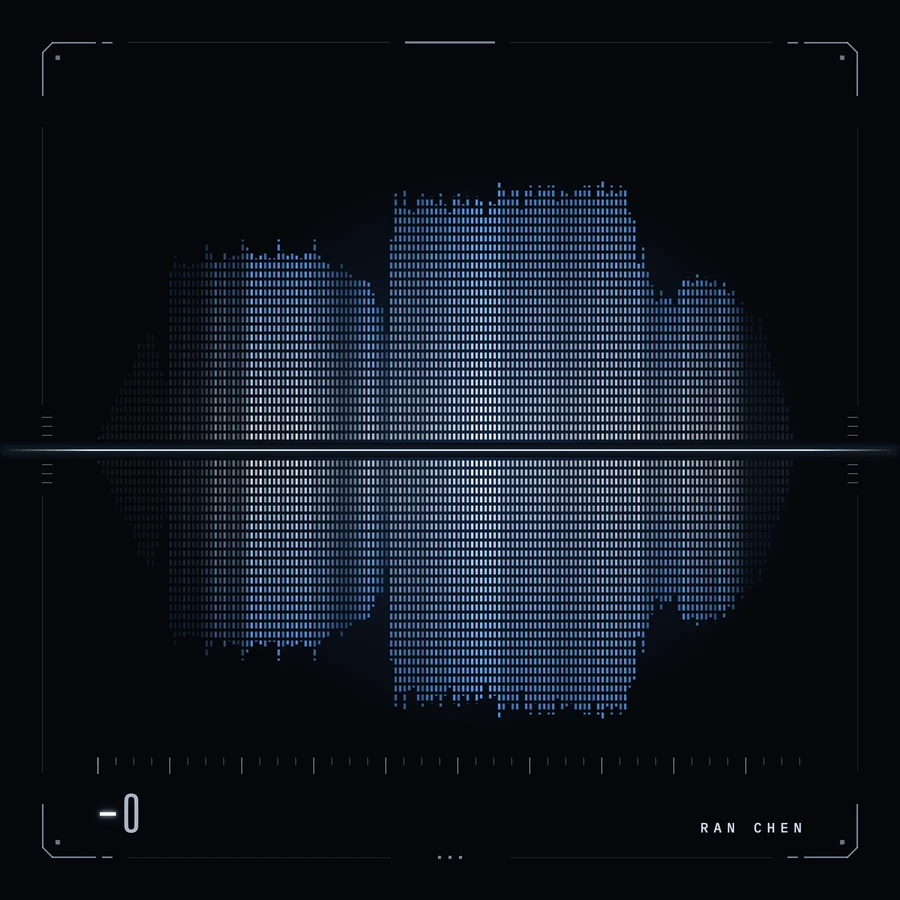
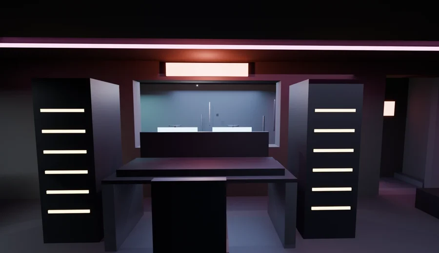

AI for Interdisciplinary Design Portfolio
Ran Chen
Click to plant a noteHeight = pitch · shape = tone
000 / NOTES

A cover for my own techno track, drawn by the track: 157 bars of music become 157 bars of light.

An underground pirate radio station in the basement of a closed-down coin laundry, built in Blender.